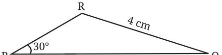
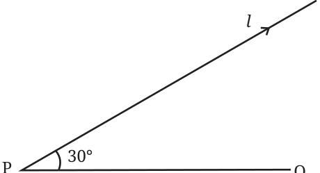
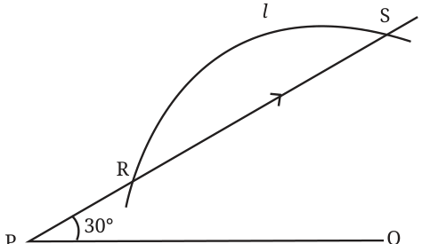
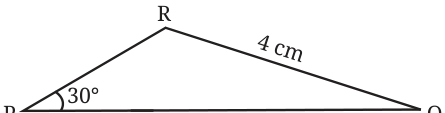
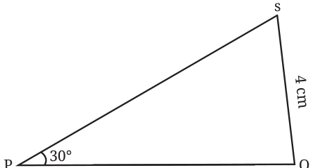

What if two sides and a non-included angle are equal?
\(\triangle ABC\) and \(\triangle XYZ\) are two triangles such that
\(AB = XY = 6\) cm, \(AC = XZ = 4\) cm, and \(\angle B = \angle Y = 30°\)
Are they congruent?
Can there exist non-congruent triangles having these measurements? Construct and find out.
Looking at a rough diagram helps in planning the construction.

How does one construct a triangle having these measurements?
Step 1: Draw the base PQ of length 6 cm.
Step 2: Draw a line l from P that makes an angle of 30° with PQ.

Step 3: Draw a sufficiently long arc from Q of radius 4 cm cutting the line l.

How do we find the required triangle from this figure?
A point of intersection of the arc and the line l gives the third point of the required triangle. But we see that the arc intersects the line l at two different points R and S.
Both \(\triangle PQR\) and \(\triangle PQS\) satisfy the given measurements.


Hence, we can draw two non-congruent triangles with the given measurements.
This is called the SSA (Side Side Angle) condition. We have seen that SSA condition does not guarantee congruence.
We have examined cases using two sides and an angle for determining congruence. Can we use two angles and a side? Let us first take the case of two angles and the included side.